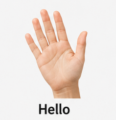
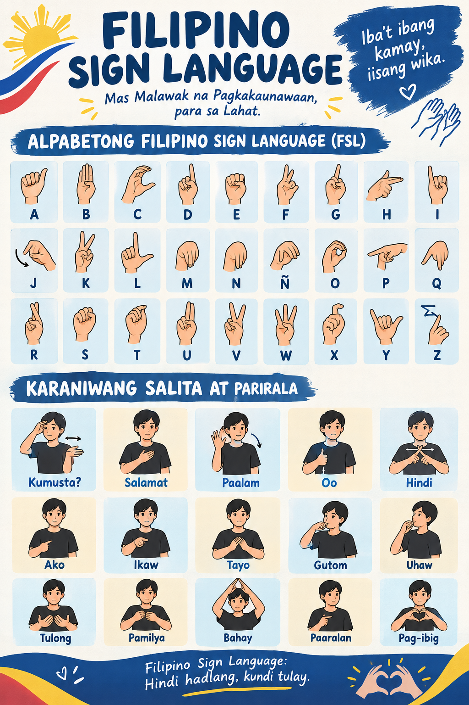

Developed by the SignSync team
SignSync is an Android app that recognizes sign language gestures through your phone camera and translates them into text instantly, built to help SPED classrooms communicate without barriers.
In SPED classrooms, sign language is often the clearest way a student can express what they know but not every teacher, aide, or classmate can read it in real time.
Few teachers and support staff are fluent in sign language, creating a daily translation gap in instruction and assessment.
Existing tools are either too slow, too generic, or not built for a classroom's pace leaving gestures unread until it's too late to respond.
Sign recognition research rarely accounts for shared devices, variable lighting, or the physical setup of an actual SPED room.
SignSync runs an AI hand-tracking pipeline right on the phone. A dedicated IoT capture unit is part of the project's classroom setup.
The camera captures hand movement and gesture data directly in the classroom.
→Hand landmarks are isolated in real time, filtering out noise from the room around them.
→The on-device AI model matches tracked hand movement against known gestures.
→The result appears as text, readable by the teacher the moment it's signed.
Everything below is in the SignSync app today.
Open the gesture scanner and see signs translated into readable text as they happen.
A learning center with tutorials, how-to-sign guides, and a training mode with camera practice.
Review past translations and track your learning progress over time.
An in-app chatbot supports learners and teachers with guidance while they use the app.
Camera frames are processed locally on your device with MediaPipe and are never uploaded.
A quick-access SOS feature for urgent situations, so help is always one tap away.
Pair voice with text and signs to support conversations between Deaf and hearing users.
Sign in with email or Google, or continue as a guest to start translating right away.
Designed with input from an actual SPED setting, accounting for shared use, lighting, and pacing.
The in-app sign library includes the full A–Z fingerspelling alphabet, numbers 1–10, and a large set of everyday words, each with a how-to-sign guide. Reference images follow the ASL alphabet.

Free for educational use. Camera processing happens on your device.
Only download SignSync from this page. Need help? Contact the team below.
This runs the same gesture recognizer file that ships inside the app, right in your browser. No install, no server, and nothing is uploaded. Use your camera or upload a photo of a hand sign.
TECHNOLOGY PREVIEW — THE FULL SIGN LIBRARY LIVES IN THE APP. THIS DEMO RECOGNIZES: OPEN_PALM → HELLO · THUMB_UP → LIKE · THUMB_DOWN → DISLIKE · CLOSED_FIST → FIST · VICTORY → PEACE
SignSync is being developed for direct use in a SPED classroom setting designed alongside the realities of the students and teachers who will actually rely on it.

Guiding the research, design, and development direction of SignSync from proposal through defense.
An AI and IoT-based Filipino Sign Language recognition system developed as a BSIT capstone project.